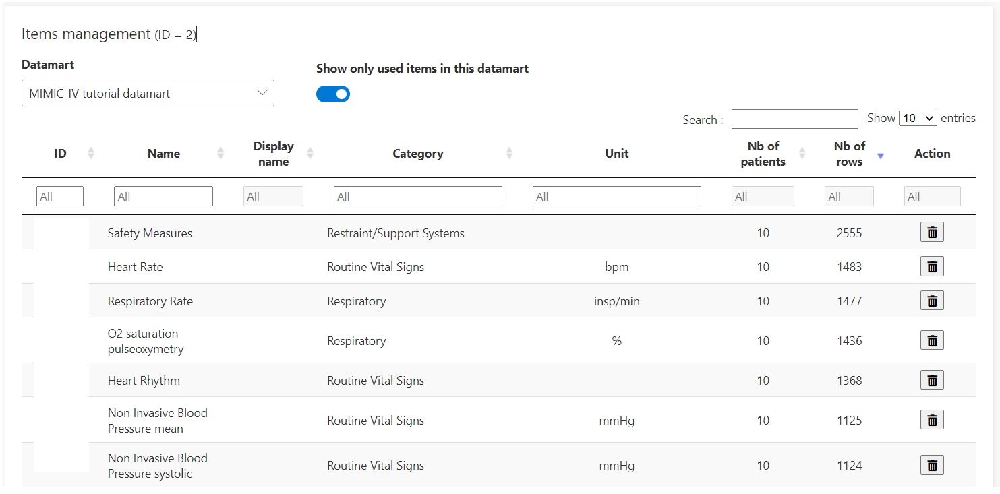

A complete use case with data coming from the MIMIC-IV database.
Ask access to MIMIC-IV data
To have access to the MIMIC-IV database, click on this link and go on the bottom of the page.
You have to :
You can see database’s tables structure here.
Launch the app
In RStudio, run the Shiny application with :
app_db_folder <- "C:/Users/John/My cdwtools project"
datamarts_folder <- "C:/Users/John/My cdwtools project/data"
cdwtools::cdwtools(language = "EN", app_db_folder = app_db_folder, datamarts_folder = datamarts_folder)See Get started page for more informations about app_db_folder &datamarts_folder` arguments.
Data source & datamart
First, create a Data source called MIMIC-IV in Settings/Data management/Data sources.

Then, create a Datamart called MIMIC-IV tutorial datamart. By default, everybody has access to this datamart. You can change the visibility of this datamart on Datamarts management > Settings (on the Action column) > Grant access to.
Edit the code of your datamart (Datamarts management > Edit code (on the Action column)), enter this code, after having modified dbConnect informations.
First, let’s import patients data (from table patients).
See import_datamart documentation to know which columns & which data type is required (?import_datamart). Let’s select only 10 patients.
# Connection to the database, from where we extract data
con <- DBI::dbConnect(RPostgres::Postgres(), dbname = "mimic-iv", host = "localhost",
port = 5432, user = "admin", password = "admin")
# Create a patients function which, when executed, gets patients data
patients <- function(){
DBI::dbGetQuery(con, paste0(
"SELECT icu.subject_id AS patient_id, p.gender, p.anchor_age AS age, p.dod
FROM mimic_icu.icustays icu
INNER JOIN mimic_core.patients p ON icu.subject_id = p.subject_id
LIMIT 10")) %>%
dplyr::mutate_at("patient_id", as.integer) %>%
dplyr::mutate_at("dod", lubridate::ymd_hms)}
# Run import_datamart function, with patients function as data argument
import_datamart(output = output, r = r, datamart_id = %datamart_id%, data = patients(), type = "patients",
save_as_csv = TRUE, rewrite = FALSE, language = "EN")
# Create a patients_list function, which facilitates next SQL queries
patients_list <- function() paste(patients() %>% dplyr::pull(patient_id), collapse = ",")
# Disconnect from the DB
DBI::dbDisconnect(con)Error messages are printed in the box below the editor.
If you want to check the data before running import_datamart, you can print it in the console with :
con <- DBI::dbConnect(RPostgres::Postgres(), dbname = "mimic-iv", host = "localhost",
port = 5432, user = "admin", password = "admin")
patients <- function(){
DBI::dbGetQuery(con, paste0("SELECT * FROM mimic_core.patients p LIMIT 10")) %>%
dplyr::select(patient_id = subject_id, gender, age = anchor_age, dod)}
# Show the dataframe
print(patients())
DBI::dbDisconnect(con)We then create stays data, containing informations on distinct hospital stays (from table admissions).
con <- DBI::dbConnect(RPostgres::Postgres(), dbname = "mimic-iv", host = "localhost",
port = 5432, user = "admin", password = "admin")
# Create a stays function & import this data
stays <- function(){
DBI::dbGetQuery(con, paste0("
SELECT subject_id AS patient_id, hadm_id AS stay_id, 'Random unit' AS unit_name,
admittime AS admission_datetime, dischtime AS discharge_datetime
FROM mimic_core.admissions
WHERE subject_id IN (", patients_list(), ")")) %>%
dplyr::mutate_at("patient_id", as.integer)}
import_datamart(output = output, r = r, datamart_id = %datamart_id%, data = stays(), type = "stays",
save_as_csv = TRUE, rewrite = FALSE, language = "EN")
DBI::dbDisconnect(con)Import labs_vitals, containing labs data (from labevents table), vitals (from chartevents) table) and other informations like output events (table outputevents) & datetime events (table datetimeevents).
con <- DBI::dbConnect(RPostgres::Postgres(), dbname = "mimic-iv", host = "localhost",
port = 5432, user = "admin", password = "admin")
# Do the same with labs_vitals data
labs_vitals <- function(){
DBI::dbGetQuery(con, paste0(
"SELECT subject_id AS patient_id, 'MIMIC-IV' AS thesaurus_name, itemid AS item_id,
charttime AS datetime_start, '' AS datetime_stop, value, valuenum AS value_num,
valueuom AS unit, '' AS comments
FROM mimic_icu.chartevents
WHERE subject_id IN (", patients_list(), ")
UNION SELECT subject_id AS patient_id, 'MIMIC-IV' AS thesaurus_name, itemid AS item_id,
charttime AS datetime_start, '' AS datetime_stop, value, valuenum AS value_num,
valueuom AS unit, '' AS comments
FROM mimic_hosp.labevents
WHERE subject_id IN (", patients_list(), ")
UNION SELECT subject_id AS patient_id, 'MIMIC-IV' AS thesaurus_name, itemid AS item_id,
charttime AS datetime_start, '' AS datetime_stop, CAST(value AS VARCHAR(255)) AS value,
NULL AS value_num, valueuom AS unit, '' AS comments
FROM mimic_icu.datetimeevents
WHERE subject_id IN (", patients_list(), ")
UNION SELECT subject_id AS patient_id, 'MIMIC-IV' AS thesaurus_name, itemid AS item_id,
charttime AS datetime_start, '' AS datetime_stop, '' AS value, value AS value_num,
valueuom AS unit, '' AS comments
FROM mimic_icu.outputevents
WHERE subject_id IN (", patients_list(), ")
")) %>%
dplyr::mutate_at("patient_id", as.integer) %>%
dplyr::mutate_at("value", as.character) %>%
dplyr::mutate_at("value_num", as.numeric) %>%
dplyr::mutate_at("datetime_stop", lubridate::ymd_hms)}
import_datamart(output = output, r = r, datamart_id = %datamart_id%, data = labs_vitals(),
type = "labs_vitals", save_as_csv = TRUE, rewrite = FALSE, language = "EN")
DBI::dbDisconnect(con)For now, we do not have access to clinical notes from the MIMIC-IV database, we do not import text data.
Finally, let’s import orders data (we use only table inputevents)
con <- DBI::dbConnect(RPostgres::Postgres(), dbname = "mimic-iv", host = "localhost",
port = 5432, user = "admin", password = "admin")
orders <- function(){
DBI::dbGetQuery(con, paste0("
SELECT subject_id AS patient_id, 'MIMIC-IV' AS thesaurus_name, itemid AS item_id,
starttime AS datetime_start, endtime AS datetime_stop, '' AS route,
NULL AS continuous, amount, amountuom AS amount_unit, rate, rateuom AS rate_unit,
NULL AS concentration, '' AS concentration_unit, '' AS comments
FROM mimic_icu.inputevents
WHERE subject_id IN (", patients_list(), ")")) %>%
dplyr::mutate_at("patient_id", as.integer) %>%
dplyr::mutate_at("continuous", as.integer) %>%
dplyr::mutate_at("concentration", as.numeric)}
import_datamart(output = output, r = r, datamart_id = %datamart_id%, data = orders(), type = "orders",
save_as_csv = TRUE, rewrite = FALSE, language = "EN")
DBI::dbDisconnect(con)Put it all together (copy and paste the entire code in your App and Save) :
# Connection to the database, from where we extract data
con <- DBI::dbConnect(RPostgres::Postgres(), dbname = "mimic-iv", host = "localhost", port = 5432,
user = "admin", password = "admin")
########## PATIENTS ##########
patients <- function(){
DBI::dbGetQuery(con, paste0(
"SELECT icu.subject_id AS patient_id, p.gender, p.anchor_age AS age, p.dod
FROM mimic_icu.icustays icu
INNER JOIN mimic_core.patients p ON icu.subject_id = p.subject_id
LIMIT 10")) %>%
dplyr::mutate_at("patient_id", as.integer) %>%
dplyr::mutate_at("dod", lubridate::ymd_hms)}
import_datamart(output = output, r = r, datamart_id = %datamart_id%, data = patients(), type = "patients",
save_as_csv = TRUE, rewrite = FALSE, language = "EN")
patients_list <- function() paste(patients() %>% dplyr::pull(patient_id), collapse = ",")
########## STAYS ##########
stays <- function(){
DBI::dbGetQuery(con, paste0("
SELECT subject_id AS patient_id, hadm_id AS stay_id, 'Random unit' AS unit_name,
admittime AS admission_datetime, dischtime AS discharge_datetime
FROM mimic_core.admissions
WHERE subject_id IN (", patients_list(), ")")) %>%
dplyr::mutate_at("patient_id", as.integer)}
import_datamart(output = output, r = r, datamart_id = %datamart_id%, data = stays(), type = "stays",
save_as_csv = TRUE, rewrite = FALSE, language = "EN")
########## STAYS_VITALS ##########
labs_vitals <- function(){
DBI::dbGetQuery(con, paste0(
"SELECT subject_id AS patient_id, 'MIMIC-IV' AS thesaurus_name, itemid AS item_id,
charttime AS datetime_start, '' AS datetime_stop, value, valuenum AS value_num,
valueuom AS unit, '' AS comments
FROM mimic_icu.chartevents
WHERE subject_id IN (", patients_list(), ")
UNION SELECT subject_id AS patient_id, 'MIMIC-IV' AS thesaurus_name, itemid AS item_id,
charttime AS datetime_start, '' AS datetime_stop, value, valuenum AS value_num,
valueuom AS unit, '' AS comments
FROM mimic_hosp.labevents
WHERE subject_id IN (", patients_list(), ")
UNION SELECT subject_id AS patient_id, 'MIMIC-IV' AS thesaurus_name, itemid AS item_id,
charttime AS datetime_start, '' AS datetime_stop, CAST(value AS VARCHAR(255)) AS value,
NULL AS value_num, valueuom AS unit, '' AS comments
FROM mimic_icu.datetimeevents
WHERE subject_id IN (", patients_list(), ")
UNION SELECT subject_id AS patient_id, 'MIMIC-IV' AS thesaurus_name, itemid AS item_id,
charttime AS datetime_start, '' AS datetime_stop, '' AS value, value AS value_num,
valueuom AS unit, '' AS comments
FROM mimic_icu.outputevents
WHERE subject_id IN (", patients_list(), ")
")) %>%
dplyr::mutate_at("patient_id", as.integer) %>%
dplyr::mutate_at("value", as.character) %>%
dplyr::mutate_at("value_num", as.numeric) %>%
dplyr::mutate_at("datetime_stop", lubridate::ymd_hms)}
import_datamart(output = output, r = r, datamart_id = %datamart_id%, data = labs_vitals(),
type = "labs_vitals", save_as_csv = TRUE, rewrite = FALSE, language = "EN")
########## ORDERS ##########
orders <- function(){
DBI::dbGetQuery(con, paste0("
SELECT subject_id AS patient_id, 'MIMIC-IV' AS thesaurus_name, itemid AS item_id,
starttime AS datetime_start, endtime AS datetime_stop, '' AS route,
NULL AS continuous, amount, amountuom AS amount_unit, rate, rateuom AS rate_unit,
NULL AS concentration, '' AS concentration_unit, '' AS comments
FROM mimic_icu.inputevents
WHERE subject_id IN (", patients_list(), ")")) %>%
dplyr::mutate_at("patient_id", as.integer) %>%
dplyr::mutate_at("continuous", as.integer) %>%
dplyr::mutate_at("concentration", as.numeric)}
import_datamart(output = output, r = r, datamart_id = %datamart_id%, data = orders(), type = "orders",
save_as_csv = TRUE, rewrite = FALSE, language = "EN")
# Disconnect from the DB
DBI::dbDisconnect(con)Run the code with the Run code button.
This may take a few minutes, depending on the server where MIMIC-IV data are hosted and if SQL indexes have been made.
You should have this screen, confirming everything went fine :

Thesaurus
Let’s now import the thesaurus.
Go to Settings > thesaurus and create a new thesaurus.
As you’ve seen in previous section, we have called the thesaurus ‘MIMIC-IV’, so we need to call our thesaurus ‘MIMIV-IV’ here too.
Then, edit the code of the thesaurus you’ve just created.
MIMIC-IV thesaurus can be found in these tables : d_items and d_labitems.
See documentation with ?import_thesaurus.
# Connection to the database, from where we extract data
con <- DBI::dbConnect(RPostgres::Postgres(), dbname = "mimic-iv", host = "localhost",
port = 5432, user = "admin", password = "admin")
# Create a function which, when executed, gets thesaurus data
thesaurus <- function(){
DBI::dbGetQuery(con,
"SELECT itemid AS item_id, label AS name, '' AS display_name, category, unitname AS unit
FROM mimic_icu.d_items
UNION SELECT itemid AS item_id, label AS name, '' AS display_name, category, '' AS unit
FROM mimic_hosp.d_labitems") %>%
dplyr::mutate_at("item_id", as.integer)
}
# Run import_thesaurus function
import_thesaurus(output = output, r = r, thesaurus_id = %thesaurus_id%, thesaurus = thesaurus(), language = language)
# Disconnect
DBI::dbDisconnect(con)You can now load the thesaurus items with the Table button on the Action column of Thesaurus management card.
The first time you load the thesaurus, it may take a few seconds. Data are saved in the cache table, so refresh the page, reconnect and reload thesaurus items, it should take less than one second.
You can edit display names & units of the thesaurus items.
If you choose the MIMIC-IV tutorial datamart in the dropdown, and click on Show only used items in this datamart.
You should see two new columns in the datatable, a column Nb of patients, telling you the number of patients of you datamart who actually have at least one time this item in their data, and a column Nb of rows indicating the total number of occurences of this items, in the whole datamart.
Let’s order our data by Nb of rows to see the most used items.
You should have this screen :

Modules & plugins
In this section, we will create : - A module family - Some modules - Somes modules elements
A module family is a group of modules, which can be shared with other users (for example, the MIMIC-IV default module family we will create can be shared). A module is a page containing multiple modules elements. A module element is a chart, used to visualize data.
Patient-level modules
We will first create some patient-level modules, similar to those you can see with demo data.
Go to Patient-level modules page, click on New module family, create a module family named MIMIC-IV default.
Now, click on New module, create a Haemodynamics module, under the module family we’ve just created.
Notice that you can choose a parent module, if you do so, the current module will be a sub-category of the parent module.
Now you’ve created a module family and a first module, you can create some modules elements.
Go to New module element, select our module family called MIMIC-IV default, our first module called Haemodynamics.
Now, choose the Dygraph plugin. Notice that you can see descriptions of the plugins in the Plugins section.
Choose the MIMIC-IV thesaurus, the MIMIC-IV tutorial datamart.
Once again, it may take a few minutes : the application is creating some cache data.
Choose a name for your Module element, like Haemodynamic vitals.
A dataframe with the thesaurus items should appear :

Arrange your items by Nb of rows.
Select the colour of your items and click on the plus button.
For example, add the Heart rate item & Non invasive Blood Pressure mean.
Notice that you can change the display name, it will be the name of the item displayed in the chart.
When you add an item, it is added in the dropdown Items selected. You can unselect items or reset the dropdown.
Once you’ve selected your items, click on Add.
That’s it, you’ve created your first module element.
You can’t go to Patient-level page and see your data, cause you first need to create at least an aggregated module family, and then create a study.
Create a study
Go to the Studies page. Create a study named My study. Select your datamart & the modules families you’ve created.
By default, three subsets are created :
- All patients
- Included patients
- Excluded patients
You can see the code of All patients subset in the Subsets page, by clicking on the Edit code button, on the Action column.
This code adds all the patients of the datamart in this subset.